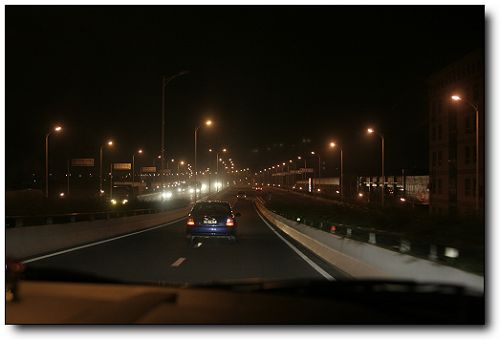
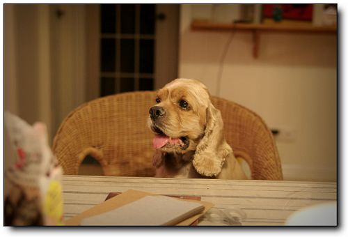
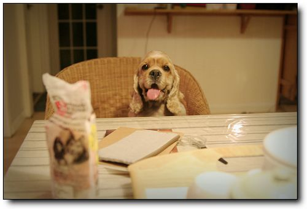
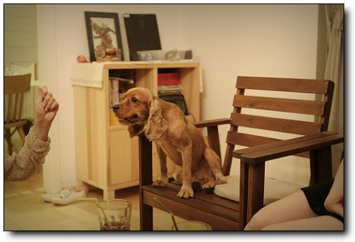

周末刚刚开始，夜晚变得很high，为什么呢？
首先三个女人一起吃饭，怎么邀请问问她都不来，然后我们威胁着要去她家小区贴标语，在她家门口蹲点，可能实在受不了我们几个疯子，她说你们来我家吧~然后三个人象高中生一样兴奋异常，端起咖啡就撤，搞得跟一帮追星族似的。真感觉象憋了很久，所有的热情都在这个夜晚释放出来。忽然想到上个周末关在笼子的猪。。。
问问的家真的好温馨，色调、家具以及摆设的搭配是那么舒服。。。舒服。。。（最近喜欢这样表达）和她这个人很协调，象一块童话田，一个世外桃源，女伴们超喜欢她家的装修风格，还有那个四方的阳台。打搅他们到11点才走，一定被我们这群疯子吓坏了，请谅解忠实读者的热情，要是可以真想在那个美好的地方再停留一会儿。
转战问问家的路上，热情的人总显得有些傻，其实俺们大多数时间都是矜持的模范，周末谁还在乎你傻不傻呢？卸下伪装吧！

因为客人来，狗狗们得到了好吃的零食。

脾气古怪的外外，超严肃。想望美食的表情才这么可爱的~

目不转睛地盯着餐桌上的零食。

仍然很热烈地望着桌上的那袋饼干。

哈，饼干就在不远处，但只能望着望着不停地望着啊。

一对有才男女与一对性格完全相反的可卡生活在童话田园里。

我最喜欢的是ZAKKEY，因为它的眼神很打动我。虽然它被剔成了光猪，还是很帅哦，忍不住要温柔地抚摩抚摩再抚摩（再次这样表达），不幸地是从我怀里挣脱跌落在地上的声音很。。。。它渴望从主人那里再得到一块美味的饼干。

可爱吧，和人亲近的狗狗最可爱。

狗狗和主人的感情都凝聚在眼神里了。

*********************很HIGH的夜晚*******************
走路去1912的COSTA喝咖啡。


在我的威逼下MAGGIE接过电话继续骚扰问问，出来吧，来吧，不来去你家小区贴标语，蹲小马扎。。。这威胁也太有创意了吧？谁让MAGGIE是个又认真又有意思的女人呢！

她，晚上大多数时候都不在状态哦~但得知可以去见问问，眼睛里才闪出光彩来。

14 Responses to “热情的读者”
2009-08-22
过瘾～
2009-08-22
对我们的突然造访，问问落落大方，照顾周到。她的家收拾地十分精致舒服，每一样物品都透着她的用心，没有任何多余碍眼的东西，赞~
2009-08-22
喝了咖啡的女人，就是不一样啊不一样……
还有，贵的镜头，到底是不一样啊不一样……
2009-08-22
看来你很喜欢COSTA的咖啡，这个店的出镜率很高
2009-08-22
那家“典尚”的照片好像衡山路上的一家bar啊
2009-08-22
很喜欢COSTA的咖啡？南京如果可以找到更好的咖啡，我也会去尝试一下的。
有关镜头，问问就不要嘌我来~
2009-08-23
看了这些照片，基本可以画问问家的户型图了，你们照得真全面。
2009-08-23
那天的裙子很好看，所有的细节都很到位，怎么不上片片～
2009-08-23
她家大着呢,几张照片反映不了户型图啊～实在的人总是拍不好朦胧照，呵呵。
2009-08-23
家里图这个色调茶有没有调过？偏黄呀……
2009-08-24
不调颜色更黄，晚上在灯光下拍出来的效果大多数都偏黄的，你试试呢？
2009-08-24
北欧风格？喜欢~~
2009-08-25
很羡慕你有一群亲密的女伴。我的朋友们都被生活的现实弄得有点忙于应付。很少有机会做一些轻松的事，哪怕就是聊天，也都是对生活的无奈。搞的我也性质缺缺。大家真的要学学欣赏生活， 享受生活。
祝你旅游快乐。
2009-08-25
深有同感~~
Leave A Reply
存档只读，评论已关闭。